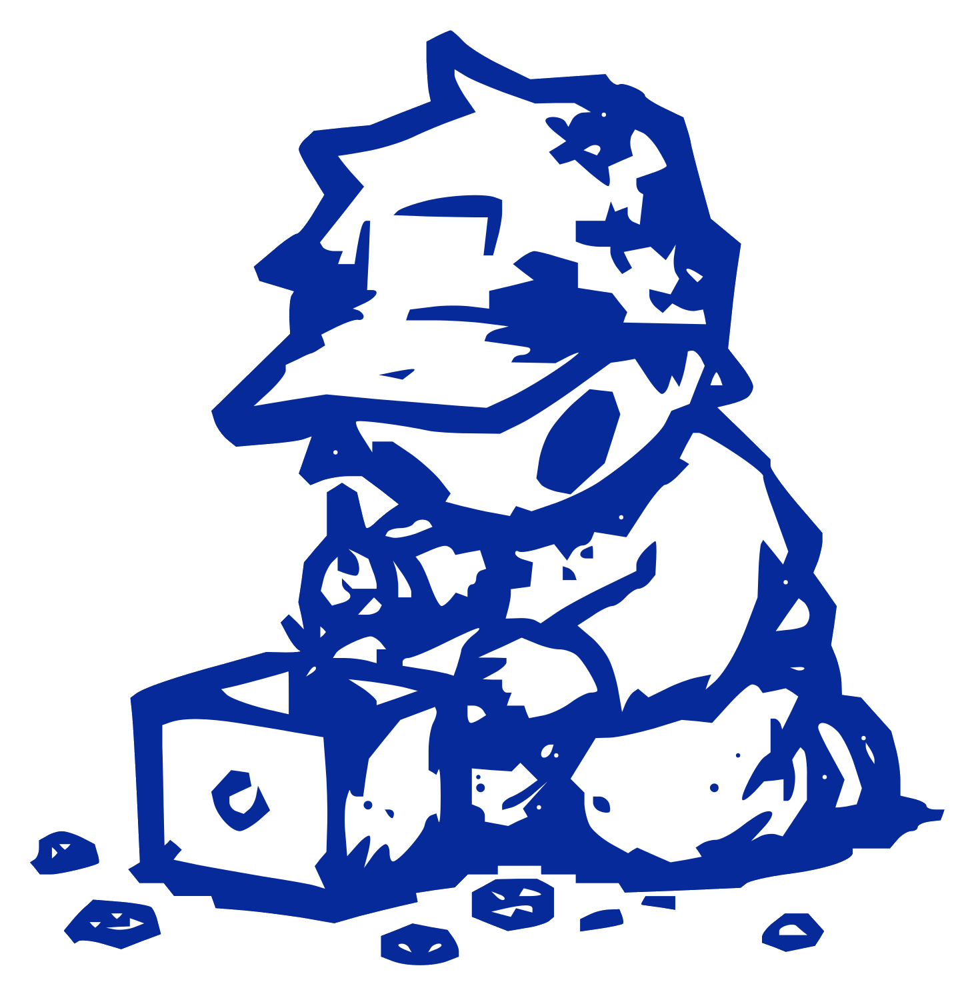
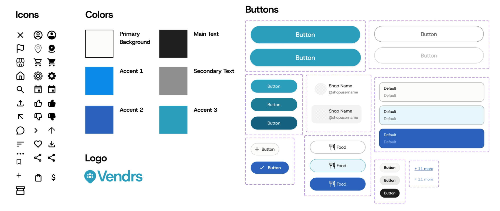

All workPRODUCT DESIGN
Vendrs
A web platform that gives emerging Gen Z business owners the structure to grow, without the overwhelm.

A home base for people building a business on the side
Vendrs came out of an 8-week Design Interactive sprint. Five of us set out to help small business owners operate, share resources, and connect with their community in one place. I owned two features end to end: the onboarding flow and the Events Map.
This case study focuses on those two, because they are where I made the decisions that shaped how the product feels and how its pieces fit together.
Browsing and filtering events in the live prototype.
The drive was there. The infrastructure wasn't.
Every owner we spoke to was resourceful, but their tools were scattered across group chats, spreadsheets, and Instagram DMs. Discovery was the loudest pain: people heard about local markets through a friend's story, usually too late to apply. And when they tried new tools, setup asked for too much before showing any value, so they left.
They didn't lack ambition. They lacked infrastructure.
The pattern behind every interview
Listening before designing
We paired quantitative surveys with one-on-one interviews. Surveys told us how common a problem was; interviews told us why it mattered. Three numbers reset our priorities.
of owners want to scale their business
want a bigger audience for what they make
run their shop entirely by themselves
40+ observations, five themes
We wrote every quote and data point on a sticky note and clustered them. Below are the headliners from each group. Two of them, the starred ones, are exactly where my features ended up living.
★ Marketing and Operations became my Events Map (audience and discovery) and onboarding (a lighter way to start).
Deciding what to build first
A long wish list and eight weeks forced a hard call. We ranked features by impact and how hard they would be to copy, then drew a line. My two features sat at the top.
Onboarding that earns trust in four steps my feature
People abandon tools that ask too much up front, so I kept onboarding to four quick steps and made each one pull its weight. The decision I care most about is business type. It labels the owner for the community, and it becomes a filter the rest of the product reuses, including my Events Map. One choice, a personalized feed from day one.

reused everywhere
Step 2 sets the business type, the primitive my Events Map filters reuse.
The full four-step flow: log in, business type, location, and goals.
- One decision per screen. Progressive disclosure keeps momentum and stops the form from feeling like paperwork.
- Social login first. Continue with Google or Apple removes the highest-friction moment before a user has any reason to trust us.
- Business type as a reusable filter. The same taxonomy powers the feed and the Events Map, so onboarding does real work instead of just collecting data.
Turning discovery into something you can see my feature
Discovery was the number one pain, so I made it spatial. The Events Map pins nearby markets, mirrors them in a scannable list, and sorts by distance so the closest opportunity is the first thing you notice. The filters reuse the exact business types from onboarding, so a food vendor lands on food events with zero setup.

business types
Selecting an event in the list highlights its pin, and the filters come straight from onboarding.
- Map plus list, one surface. Spatial for context, list for scanning. Selecting in one highlights the other.
- Distance-first sorting. The closest market wins the top slot, because proximity is what owners optimize for.
- Filters tied to onboarding. Reusing the taxonomy meant zero extra setup and a feed that felt personal immediately.
Marketplace and Dashboard, on a shared system
My teammates led the Marketplace and the Dashboard. To keep four sets of hands feeling like one product, we designed against a shared system, so a button, a card, or a filter behaves the same everywhere.
Marketplace: templates and resources owners can search and buy.
Dashboard: analytics with recommended next steps.
One system so four designers ship one product
A calm blue palette keeps the interface quiet so the vendors' own products and photos lead. We standardized icons, colors, and button states early, which is what let each of us build a different feature without the seams showing.

What testing changed, and what I'd do next
Usability testing pushed three changes. Two landed on my features, which told me the map-to-list relationship and the length of onboarding were doing real work for people.
- Events Map. Testers wanted the map and list to feel like one thing, so I tightened the sync and made the active event obvious in both places at once.
- Onboarding. I cut a step people read as busywork and led with value instead of forms, which lifted completion.
- Marketplace (team). We replaced a confusing two-column layout with a scannable horizontal one after testing.
If this kept going, I'd add messaging so owners can form groups and mentor newcomers, and build out the customer-facing side to drive foot traffic back to vendors.
My biggest takeaway: a small taxonomy decision in onboarding quietly became the backbone of discovery. The early, boring calls are the ones that compound.